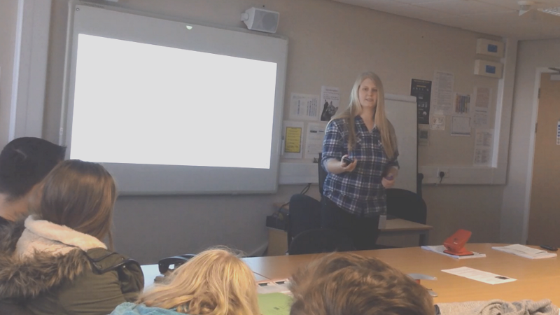

My First Ever Talk...
Published: 4th June, 2016
Now I am by no means the best speaker in the world, in fact, I am one of those people that hate doing presentations. So why the hell did I say yes to doing a talk in front of students?
Honestly, I’m not quite sure. I suppose I saw it as an opportunity to do something that was out of my comfort zone and when I say out of my comfort zone I really mean that, as this is something that I would normally shy away from.

Just to give a bit of context to this, I was asked to give a talk to some students at my old college back in February. I didn’t say yes straight away but after some thought, I emailed back saying that I would love to give a talk.
Before doing the talk I spent time preparing for it. This involved thinking about what I wanted to say, creating the presentation and cue cards. The talk was on the topic of side projects, which is something I do in my normal day to day life, but pinpointing the specific things I wanted to talk about and getting the structure right took some time. As this is totally new to me I ran through the talk in my room to see how it flowed quite a few times.
I did the talk to three groups of students, which I wasn’t expecting but I’m quite glad it turned out like that as the talk to the first group, in my opinion, was absolutely awful. My reasons for thinking this is, I forgot a few things I wanted to say and talked way to fast. Saying that, actually doing the talk felt good afterwards. The second and third talk were much better as I got into more of a flow. I was quite surprised by how much interaction I got from the students as I was expecting no one to respond to any of my questions but in all three groups I got asked a fair few questions.
I still have a lot to improve on, in terms of speaking in front of an audience but I think over time and with practice I will get more confident. I also think that the more talks/speaking events I do I’ll be able to answer questions better and in more depth.
Looking back, I am really glad I took this opportunity and I thank the IT Department at Selby College for inviting me back.
It was weird being back at my old College but it was such a great experience being on the other side of the classroom giving a talk to the students about side projects!
While I was there I was able to film the talk. Click the link below to watch the talk.
Side Projects talk at Selby College (Video)